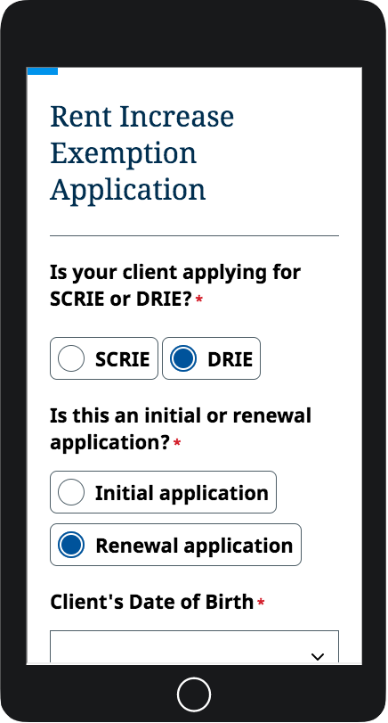

Formstack
Formstack is an cloud based service for custom form building and publishing of online forms. Forms hosted on their platform can be styled using themes and the ACCESS NYC Patterns includes a stylesheet for integrating form styling for Formstack Themes.

Usage
- Create a new Formstack Theme following this tutorial. You can name the theme ACCESS NYC Patterns.
- Under Quick Styles, change the form font to Noto Sans. You do not need to modify any of the other settings.
- Under Advanced Code Editor, copy and paste the following code into the css editor and save your changes.
@import url('https://fonts.googleapis.com/css?family=Noto+Serif:400');
/**
* ACCESS NYC Patterns v0.10.8
* Formstack Object
* Documentation: https://accesspatterns.cityofnewyork.us/formstack
* Source: https://github.com/CityOfNewYork/ACCESS-NYC-PATTERNS/blob/v0.10.8/dist/objects/formstack/formstack.css
*
* Below is compiled css copied and pasted from
* ACCESS NYC Patterns. See details above. Do not
* try to modify the code below. Follow ACCESS NYC
* Patterns development process for updating the
* styling of this theme. Please update the version
* number and this description if it is to be changed.
*/
/**
* Formstack
*/
html {
font-size: 22px;
line-height: 1.4;
font-family: "Noto Sans", sans-serif; }
.fsBody {
font-size: 22px;
line-height: 1.4;
font-family: "Noto Sans", sans-serif;
color: initial;
background-color: #ffffff;
padding: 0px;
padding-top: 8px; }
@media screen and (min-width: 960px) {
.fsBody {
background-color: #EEF3F7;
padding-left: 96px;
padding-right: 96px; } }
.fsBody p, .fsBody ul, .fsBody ol {
margin-top: 0;
margin-bottom: 0.36rem; }
.fsBody .fsPage {
min-width: auto; }
.fsBody .fsForm {
font-size: 0.72rem;
background-color: #ffffff;
padding: 24px;
margin: 0px;
max-width: 1200px;
min-height: 100%;
min-width: 320px;
width: auto;
padding-top: 0px; }
@media screen and (min-width: 960px) {
.fsBody .fsForm {
border: 1px solid #d1d5d9;
padding-left: 32px;
padding-right: 32px;
padding-bottom: 32px;
margin: 64px auto; } }
.fsBody .fsForm .fsSectionHeader {
margin: 0;
padding: 0;
background-color: transparent; }
.fsBody .fsForm .fsSectionHeading {
font-weight: normal;
font-size: 1.45rem;
line-height: 1.3;
font-family: "Noto Serif", serif;
color: #112E51;
font-size: 1.45rem;
text-align: left;
border-bottom: 1px solid;
border-color: #505C66;
padding-bottom: 32px;
margin-bottom: 24px;
padding-top: 32px; }
@media screen and (min-width: 768px) {
.fsBody .fsForm .fsSectionHeading {
font-size: 1.81rem; } }
.fsBody .fsForm textarea.fsField,
.fsBody .fsForm input:not([type='checkbox']):not([type='radio']).fsField,
.fsBody .fsForm input:not([type='checkbox']):not([type='radio']).fsOtherField {
color: initial;
font-family: inherit;
font-size: inherit;
line-height: initial;
appearance: none;
border: 1px solid #505C66;
border-radius: 0;
display: block;
max-width: 100%;
min-width: 200px;
width: 100%;
margin: 0;
cursor: pointer;
color: #505C66;
padding: 18px;
max-width: 100% !important;
min-width: 200px !important;
height: auto; }
.fsBody .fsForm textarea.fsField::placeholder,
.fsBody .fsForm input:not([type='checkbox']):not([type='radio']).fsField::placeholder,
.fsBody .fsForm input:not([type='checkbox']):not([type='radio']).fsOtherField::placeholder {
color: #505C66; }
@media screen and (min-width: 768px) {
.fsBody .fsForm textarea.fsField,
.fsBody .fsForm input:not([type='checkbox']):not([type='radio']).fsField,
.fsBody .fsForm input:not([type='checkbox']):not([type='radio']).fsOtherField {
width: auto !important; } }
.fsBody .fsForm input:not([type='checkbox']):not([type='radio']).fsFieldName {
width: 100% !important; }
@media screen and (min-width: 768px) {
.fsBody .fsForm input:not([type='checkbox']):not([type='radio']).fsFieldName {
width: 100% !important; } }
.fsBody .fsForm select.fsField,
.fsBody .fsForm select.fsField:not([multiple=multiple]) {
color: initial;
font-family: inherit;
font-size: inherit;
line-height: initial;
appearance: none;
border: 1px solid #505C66;
border-radius: 0;
display: block;
max-width: 100%;
min-width: 200px;
width: 100%;
margin: 0;
cursor: pointer;
background-color: #ffffff;
background-image: url("https://cdn.jsdelivr.net/gh/CityOfNewYork/ACCESS-NYC-PATTERNS@v0.10.8/dist/svg/icon-ui-chevron-down.svg");
background-position: right 0.5rem center;
background-repeat: no-repeat;
background-size: 24px 24px;
padding: 18px;
padding-right: 2.8rem;
display: inline-block;
float: none;
height: auto;
width: auto; }
.fsBody .fsForm select.fsField::-ms-expand,
.fsBody .fsForm select.fsField:not([multiple=multiple])::-ms-expand {
display: none; }
.fsBody .fsForm .fsFieldRow {
margin-bottom: 24px !important; }
@media screen and (min-width: 768px) {
.fsBody .fsForm [fs-field-type='name'] .fieldset-content,
.fsBody .fsForm [fs-field-type='name'] .fsSubFieldGroup {
max-width: 100%;
width: 447px; } }
@media screen and (min-width: 480px) {
.fsBody .fsForm [fs-field-type='name'] .fieldset-content,
.fsBody .fsForm [fs-field-type='name'] .fsSubFieldGroup {
width: 100%;
display: flex;
justify-content: space-between; }
.fsBody .fsForm [fs-field-type='name'] .fieldset-content .fsSubField,
.fsBody .fsForm [fs-field-type='name'] .fsSubFieldGroup .fsSubField {
flex: 1;
width: calc(50% - 16px) !important;
max-width: calc(50% - 16px);
flex-basis: calc(50% - 16px);
margin: 0px; } }
.fsBody .fsForm [fs-field-type='radio'] .fsOptionLabel.vertical,
.fsBody .fsForm [fs-field-type='checkbox'] .fsOptionLabel.vertical {
display: flex; }
.fsBody .fsForm [fs-field-type='radio'] .fsOptionLabel.horizontal,
.fsBody .fsForm [fs-field-type='checkbox'] .fsOptionLabel.horizontal {
font-size: 22px;
font-weight: bold;
transition: all .2s;
background: #ffffff;
border: 1px solid #505C66;
border-radius: 8px;
cursor: pointer;
line-height: 30px;
margin-right: 12px;
padding: 8px;
padding-left: 42px;
position: relative;
display: inline-block;
padding-left: 8px;
margin-bottom: 0; }
.fsBody .fsForm [fs-field-type='datetime'] .fieldset-content,
.fsBody .fsForm [fs-field-type='datetime'] .fsSubFieldGroup {
display: flex;
flex-direction: column; }
.fsBody .fsForm [fs-field-type='datetime'] .fieldset-content select.fsField,
.fsBody .fsForm [fs-field-type='datetime'] .fieldset-content select.fsField:not([multiple=multiple]),
.fsBody .fsForm [fs-field-type='datetime'] .fsSubFieldGroup select.fsField,
.fsBody .fsForm [fs-field-type='datetime'] .fsSubFieldGroup select.fsField:not([multiple=multiple]) {
width: 100%;
margin-bottom: 8px; }
.fsBody .fsForm [fs-field-type='datetime'] .fieldset-content .fsCalendarPickerLink,
.fsBody .fsForm [fs-field-type='datetime'] .fsSubFieldGroup .fsCalendarPickerLink {
order: -1; }
.fsBody .fsForm [fs-field-type='datetime'] .fieldset-content .ui-datepicker-trigger,
.fsBody .fsForm [fs-field-type='datetime'] .fsSubFieldGroup .ui-datepicker-trigger {
display: none; }
@media screen and (min-width: 960px) {
.fsBody .fsForm [fs-field-type='datetime'] .fieldset-content,
.fsBody .fsForm [fs-field-type='datetime'] .fsSubFieldGroup {
width: 447px; } }
@media screen and (min-width: 480px) {
.fsBody .fsForm [fs-field-type='datetime'] .fieldset-content,
.fsBody .fsForm [fs-field-type='datetime'] .fsSubFieldGroup {
flex-direction: row;
align-items: center;
justify-content: space-between; }
.fsBody .fsForm [fs-field-type='datetime'] .fieldset-content select.fsField,
.fsBody .fsForm [fs-field-type='datetime'] .fieldset-content select.fsField:not([multiple=multiple]),
.fsBody .fsForm [fs-field-type='datetime'] .fsSubFieldGroup select.fsField,
.fsBody .fsForm [fs-field-type='datetime'] .fsSubFieldGroup select.fsField:not([multiple=multiple]) {
flex: 1;
flex-basis: calc(33.33% - 16px);
width: calc(33.33% - 16px);
max-width: calc(33.33% - 16px);
min-width: inherit;
margin-right: 0; }
.fsBody .fsForm [fs-field-type='datetime'] .fieldset-content .fsCalendarPickerLink,
.fsBody .fsForm [fs-field-type='datetime'] .fsSubFieldGroup .fsCalendarPickerLink {
margin-top: -8px; }
.fsBody .fsForm [fs-field-type='datetime'] .fieldset-content .ui-datepicker-trigger,
.fsBody .fsForm [fs-field-type='datetime'] .fsSubFieldGroup .ui-datepicker-trigger {
display: none; } }
.fsBody .fsForm .fsLabel {
display: inline-block;
font-size: 22px;
font-weight: bold;
vertical-align: top;
margin-bottom: 8px;
color: initial;
margin-bottom: 18px;
display: block;
max-width: 100%; }
.fsBody .fsForm .fsRequiredMarker {
color: #C6252b; }
.fsBody .fsForm .fieldset-content > *:last-child,
.fsBody .fsForm .fsSubFieldGroup > *:last-child {
margin-bottom: 0; }
.fsBody .fsForm .fsSupporting {
font-size: initial;
font-weight: initial;
font-style: initial;
line-height: initial;
color: initial; }
.fsBody .fsForm .fsCurrency ~ input.fsField {
max-width: 100% !important;
min-width: 200px !important;
width: 100% !important; }
.fsBody .fsForm .fsCurrencyPrefix {
color: #0D6D3B;
font-size: 22px;
font-weight: bold;
position: absolute;
line-height: 57px;
margin-left: 10px !important;
pointer-events: none;
width: auto; }
.fsBody .fsForm .fsCurrencyPrefix + input:not([type='checkbox']):not([type='radio']).fsField {
padding-left: 30px !important; }
.fsBody .fsForm .fsOptionLabel {
font-size: 22px;
font-weight: bold;
padding-left: 6px;
padding-top: 6px;
padding-bottom: 6px;
cursor: pointer;
display: block;
margin-bottom: 24px;
display: flex;
line-height: 30px;
color: initial;
border: none;
background: none !important; }
.fsBody .fsForm .fsOptionLabel input[type='radio'],
.fsBody .fsForm .fsOptionLabel input[type='checkbox'] {
top: auto;
border: none;
margin-right: 0;
width: 30px;
height: 30px;
min-width: 30px;
margin-right: 12px;
overflow: visible; }
.fsBody .fsForm .fsOptionLabel input[type='radio']::before {
transition: all .2s;
background: #ffffff;
border: 1px solid #505C66;
border-radius: 50%;
content: '';
display: inline-block;
width: 30px;
height: 30px;
min-width: 30px;
margin-right: 12px;
display: block; }
.fsBody .fsForm .fsOptionLabel input[type='radio']:checked::before {
background-color: #184E9E;
box-shadow: 0 0 0 2px #184E9E inset, 0 0 0 4px #ffffff inset;
border: 0; }
.fsBody .fsForm .fsOptionLabel input[type='radio']:focus::before {
border: 0;
box-shadow: 0 0 0 2px #184E9E inset, 0 0 0 4px #ffffff inset; }
.fsBody .fsForm .fsOptionLabel input[type='checkbox']::before {
transition: all .2s;
background: #ffffff;
border: 1px solid #505C66;
border-radius: 8px;
content: '';
display: inline-block;
width: 30px;
height: 30px;
min-width: 30px;
margin-right: 12px;
display: block; }
.fsBody .fsForm .fsOptionLabel input[type='checkbox']:checked::before {
background: #184E9E url("https://cdn.jsdelivr.net/gh/CityOfNewYork/ACCESS-NYC-PATTERNS@v0.10.8/dist//svg/icon-checkmark-white.svg") no-repeat;
background-size: cover;
border: 0; }
.fsBody .fsForm .fsOptionLabel input[type='checkbox']:focus::before {
border: 0;
box-shadow: 0 0 0 1px #ffffff, 0 0 0 3px #184E9E; }
.fsBody .fsForm .fsValidationError {
background-color: initial;
box-shadow: none; }
.fsBody .fsForm .fsValidationError .fieldset-content,
.fsBody .fsForm .fsValidationError .fsSubFieldGroup {
position: relative; }
.fsBody .fsForm .fsValidationError .fieldset-content::before,
.fsBody .fsForm .fsValidationError .fsSubFieldGroup::before {
position: absolute;
top: -12px;
bottom: -24px;
left: -19px;
border-left: 3px solid #C6252b;
content: '';
display: block;
width: 0; }
.fsBody .fsForm .fsValidationError select.fsField,
.fsBody .fsForm .fsValidationError select.fsField:not([multiple=multiple]) {
color: initial !important;
border-color: #C6252b !important;
background-image: url("https://cdn.jsdelivr.net/gh/CityOfNewYork/ACCESS-NYC-PATTERNS@v0.10.8/dist/svg/icon-ui-chevron-down.svg") !important; }
.fsBody .fsForm .fsValidationError textarea.fsField,
.fsBody .fsForm .fsValidationError input:not([type='checkbox']):not([type='radio']).fsField,
.fsBody .fsForm .fsValidationError input:not([type='checkbox']):not([type='radio']).fsOtherField {
color: initial !important;
border-color: #C6252b !important; }
.fsBody .fsForm .fsValidationError input[type='radio']::before,
.fsBody .fsForm .fsValidationError input[type='checkbox']::before {
border-color: #505C66 !important; }
.fsBody .fsForm .fsValidationError .fsLabel,
.fsBody .fsForm .fsValidationError .fsOptionLabel {
color: initial !important; }
.fsBody .fsForm .fsFieldFocused:not(.fsValidationError).fsSpan100 {
margin: 0;
padding: 0; }
.fsBody .fsForm [fs-field-type='richtext'] {
font-size: 0.72rem;
background: #EEF3F7;
border: 1px solid #D1D5D9;
padding: 24px; }
.fsBody .fsForm [fs-field-type='richtext'] > p:last-child {
margin-bottom: 0; }
.fsBody .fsForm [fs-field-type='richtext'] small {
font-size: 0.54rem;
line-height: 1.4;
margin: 0;
display: inline-block; }
.fsBody .fsForm .fsSubmitButton,
.fsBody .fsForm .fsPreviousButton,
.fsBody .fsForm .fsNextButton {
border-radius: 5px !important;
appearance: none;
transition: background .2s ease-in, color .2s ease-in;
font-weight: bold;
font-size: 1.09rem;
line-height: 1.3;
font-family: "Noto Sans", sans-serif;
line-height: 1;
background-color: #ffffff;
border: 0;
border-radius: 5px;
display: inline-block;
padding: 16.0px 24px;
text-align: center;
text-decoration: none;
cursor: pointer;
border-radius: 5px !important;
font-size: 1.09rem !important;
width: auto;
height: auto; }
.fsBody .fsForm .fsSubmitButton .icon,
.fsBody .fsForm .fsPreviousButton .icon,
.fsBody .fsForm .fsNextButton .icon {
vertical-align: middle; }
.fsBody .fsForm .fsSubmitButton .fsFull,
.fsBody .fsForm .fsPreviousButton .fsFull,
.fsBody .fsForm .fsNextButton .fsFull {
display: block; }
.fsBody .fsForm .fsSubmitButton::before,
.fsBody .fsForm .fsPreviousButton::before,
.fsBody .fsForm .fsNextButton::before {
content: ''; }
.fsBody .fsForm .fsSubmitButton {
color: #ffffff !important;
background-color: #184E9E !important;
-webkit-font-smoothing: antialiased;
-moz-osx-font-smoothing: grayscale;
margin-top: 0 !important;
clear: both; }
.fsBody .fsForm .fsSubmitButton:link, .fsBody .fsForm .fsSubmitButton:visited {
color: #ffffff !important;
background-color: #184E9E !important; }
.fsBody .fsForm .fsSubmitButton:hover, .fsBody .fsForm .fsSubmitButton:focus, .fsBody .fsForm .fsSubmitButton:active {
color: #ffffff !important;
background-color: #1658b9 !important; }
@media screen and (max-width: 480px) {
.fsBody .fsForm .fsSubmitButton {
width: 100%;
display: block;
float: none; } }
.fsBody .fsForm .fsPreviousButton {
color: #ffffff !important;
background-color: #184E9E !important;
-webkit-font-smoothing: antialiased;
-moz-osx-font-smoothing: grayscale;
position: relative;
padding-left: 40px;
margin-bottom: 32px; }
.fsBody .fsForm .fsPreviousButton:link, .fsBody .fsForm .fsPreviousButton:visited {
color: #ffffff !important;
background-color: #184E9E !important; }
.fsBody .fsForm .fsPreviousButton:hover, .fsBody .fsForm .fsPreviousButton:focus, .fsBody .fsForm .fsPreviousButton:active {
color: #ffffff !important;
background-color: #1658b9 !important; }
.fsBody .fsForm .fsPreviousButton::before {
content: '';
position: absolute;
display: inline-block;
border-bottom: .3em solid transparent;
border-right: .4em solid;
border-right-color: inherit;
border-top: .3em solid transparent;
top: 50%;
margin-top: -.3em;
margin-left: 24px;
left: -.3em; }
.fsBody .fsForm .fsNextButton {
color: #ffffff !important;
background-color: #184E9E !important;
-webkit-font-smoothing: antialiased;
-moz-osx-font-smoothing: grayscale;
position: relative;
padding-right: 40px;
margin-bottom: 32px; }
.fsBody .fsForm .fsNextButton:link, .fsBody .fsForm .fsNextButton:visited {
color: #ffffff !important;
background-color: #184E9E !important; }
.fsBody .fsForm .fsNextButton:hover, .fsBody .fsForm .fsNextButton:focus, .fsBody .fsForm .fsNextButton:active {
color: #ffffff !important;
background-color: #1658b9 !important; }
.fsBody .fsForm .fsNextButton::after {
content: '';
position: absolute;
display: inline-block;
border-bottom: .3em solid transparent;
border-left: .4em solid;
border-left-color: inherit;
border-top: .3em solid transparent;
top: 50%;
margin-top: -.3em;
margin-right: 24px;
right: -.3em; }
.fsBody .fsForm .fsCalendarPickerLink {
display: none !important;
color: initial;
font-family: inherit;
font-size: inherit;
line-height: initial;
appearance: none;
border: 1px solid #505C66;
border-radius: 0;
display: block;
max-width: 100%;
min-width: 200px;
width: 100%;
margin: 0;
cursor: pointer;
color: #505C66;
padding: 18px;
color: transparent;
background-image: url("https://cdn.jsdelivr.net/gh/CityOfNewYork/ACCESS-NYC-PATTERNS@v0.10.8/dist//svg/icon-ui-calendar.svg");
background-repeat: no-repeat;
background-position: center;
background-size: 24px 24px;
border-radius: 5px;
border: 2px solid #184E9E;
cursor: pointer;
height: auto;
margin-bottom: 8px; }
.fsBody .fsForm .fsCalendarPickerLink::placeholder {
color: #505C66; }
@media screen and (min-width: 480px) {
.fsBody .fsForm .fsCalendarPickerLink {
width: 24px;
min-width: 24px;
height: 24px;
border: 0;
padding: 0; } }
.fsBody .fsForm .ui-datepicker-trigger {
display: none; }
.fsBody .fsForm div.fsProgress {
margin: 0;
position: fixed;
top: 0;
left: 0;
width: 100%; }
.fsBody .fsForm div.fsProgress .fsProgressBarContainer {
background-color: #ffffff;
height: 8px; }
.fsBody .fsForm div.fsProgress .fsProgressText {
display: none; }
.fsBody .fsForm div.fsProgress .fsProgressBar {
background-color: #118DF0; }
.fsBody .fsForm .fsPagination {
margin-top: 0;
padding-top: 16px;
padding-bottom: 0px; }
.fsBody .fsForm #fsSubmissionCheckmark {
background-image: url("https://cdn.jsdelivr.net/gh/CityOfNewYork/ACCESS-NYC-PATTERNS@v0.10.8/dist//svg/icon-success-green.svg");
margin: 24px 0; }
.fsBody .fsForm #fsSubmissionCheckmark + .fsSectionHeading {
text-align: center;
border: none; }
The comment will let other users know where the code source is coming from and what version of the ACCESS NYC Patterns are being used in the theme.
Development
If you are modifying the theme for Formstack you should create a new theme and import the development url of the distributed stylesheet into it. It helps to use semantic versioning in the name of the theme when developing so you know which one is the most up to date.
Once you have created a new theme, copy and paste the following snippet into the Advanced Code Editor.
@import url('https://fonts.googleapis.com/css?family=Noto+Serif:400');
@import url('http://localhost:7000/objects/formstack/formstack.css');It is also good practice to apply themes in development to sample forms. You can either copy an existing form or use a "development" form that utilizes all of the fields Formstack provides. Once the development theme is applied to the development form, you can use the View Live Form link to view changes you are making.